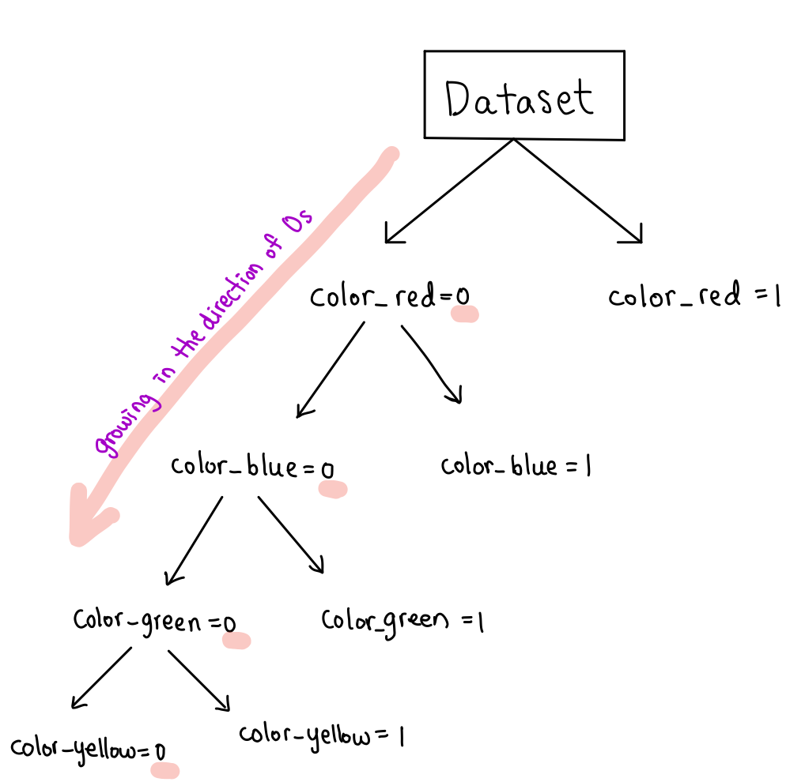

How do you deal with categorical variables in tree-based models?
high cardinality categorical variable and in tree-based model, do they get along well with each other?
지난번 포스팅 ‘nominal category feature encoding’에서 원핫 인코딩의 단점과, 카테고리 변수를 인코딩 하는 원핫인코딩 이외의 방법들에 대해 알아보았습니다. 원핫인코딩의 단점 중 하나가 트리 기반 모델을 적용할 때 cardinality 가 높은 카테고리 변수를 원핫인코딩으로 변환 시키는 것이 트리 기반 모델의 성능 저하를 야기한다는 점이었습니다. 이 문제에 대해서 자세히 다뤄봅니다.
모든 트리 기반 모델 알고리즘에는 분류 알고리즘이 있습니다. 이 분류 알고리즘은 데이터셋에서 하나의 독립 변수를 선택하고 그 변수에 대한 기준값을 정하여, 그 기준값에 의해 데이터셋을 두개의 그룹으로 분류합니다. 이 알고리즘은 모든 독립 변수에 대한 가능한 값들을 기반으로 모든 분류 방법을 찾아 내고, 그 안에서 최적의 분류 규칙을 찾아 냅니다. 이 규칙은 분류 알고리즘이 impurity (불순도)나 entropy를 가장 낮출 수 있는 방향으로 분류를 할 수 있도록 해 줍니다.
연속 변수를 통해 데이터셋이 분류 될 때, 기준값으로 선택될 수 있는 값들은 아주 다양할 것입니다. 그 결과로 대부분의 경우, 트리는 양 방향으로 자라날 수 있습니다. 그 반면, 카테고리 변수는 자연스럽게 트리 기반 모델에서 불리합니다. 그 이유는, 분류가 될 때 기준값이 될 값들이 많이 없기 때문입니다. 상황은 카테고리 변수가 원핫인코딩이 될 때 악화 됩니다. 왜냐하면 트리는 0과 1이라는 값 밖에 없기 때문에 한 방향으로만 계속 자라날 것이기 때문이죠. 트리는 0을 가지는 값을 가지는 쪽으로만 쭉쭉 자라 납니다.

즉, k개의 값(및 레벨)을 가지고 있는 카테고리 변수가 있을 때, 트리는 $\frac{2^{k}}{2} -1$ 가지의 분류 가능성 중 한가지를 택해야 합니다. 물론 카테고리 레벨이 많자 않다면, 연속 변수와 겨룰만 하겠지만, k가 천이 훨씬 넘어가는 숫자가 된다면, 트리 알고리즘은 더미 변수 중 하나를 트리의 루트에 가까운 분류 변수로 선택하지 않을 것입니다. 연속 변수를 선택하는 것이 훨씬 이득이 되겠지요.
위의 내용을 정리해 보면 트리 기반 모델에서 카테고리 변수를 원핫인코딩 함에 있어서 2가지 문제점이 있습니다:
원핫인코딩이 야기하는 sparsity는 무조건 연속 변수의 변수 중요도가 높게 나오도록 합니다.
분류 알고리즘의 관점에서 봤을 때, 모든 원핫인코딩된 카테고리 변수는 독립적입니다. 만약 트리가 하나의 원핫인코딩된 하나의 변수로 분류를 한다고 한다면, 정보량 (information gain)이 적기에 entropy/impurity를 크게 낮추지 못합니다. 그 결과로, 트리는 원핫인코딩된 변수를 선택할 확률이 낮습니다.
아래는 실제 데이터에서 높은 cardinality를 가지고 있는 카테고리 변수 3개를 뽑아 한 모델은 원핫인코딩을 사용을 하였고, 다른 모델은 바이너리 인코딩 방법을 사용하였습니다. 모든 것을 같게 두고 인코딩 방식만 바꾸었을 떄, 성능의 차이가 얼마나 나는지 확인해 보겠습니다.
1 2 3 4 5 6 7 8 9
from sklearn.model_selection import train_test_split from sklearn.preprocessing import LabelEncoder from sklearn.preprocessing import OneHotEncoder from sklearn.pipeline import make_pipeline from sklearn.linear_model import LogisticRegression from sklearn.preprocessing import StandardScaler import lightgbm from sklearn.compose import make_column_transformer import category_encoders as ce
1 2 3 4 5 6 7 8 9
# import data preprocessing file from data_preprocessing_final import *
# load Tanzania water pump dataset df = pd.read_csv('./data/training.csv') target = pd.read_csv('./data/labels.csv')
# data preprocessing data = make_meta(df)
One Hot Encoding with high cardinality features ‘funder’ ‘installer’,’clustered_space’
funder, installer에는 500여개의 값, clustered_space에는 약 2600여개의 값이 있습니다.
바이너리 인코딩을 했을 때 4%의 성능 향상이 있다는 것을 확인할 수 있습니다. 어떤 모델을 사용하느냐에 따라 다르겠지만, 트리의 특성상 cardinality가 아주 높은 카테고리 변수에서는 원핫 인코딩보다는 다른 인코딩 방식을 사용하는 것이 성능 향상에 도움이 될 것입니다.
side note : 경험적으로 바이너리 인코딩 방식이 높은 cardinality에 좋다고 알려져 있지만 모델과 데이터에 따라 다를 것입니다